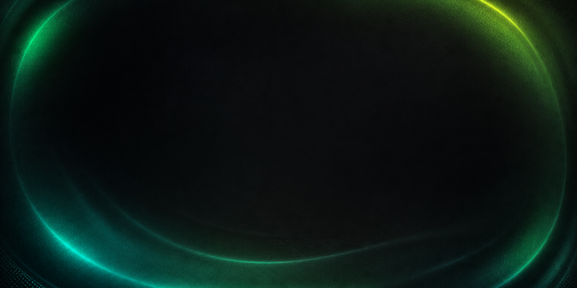
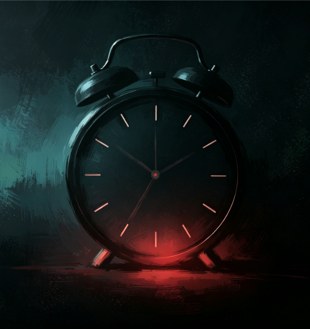
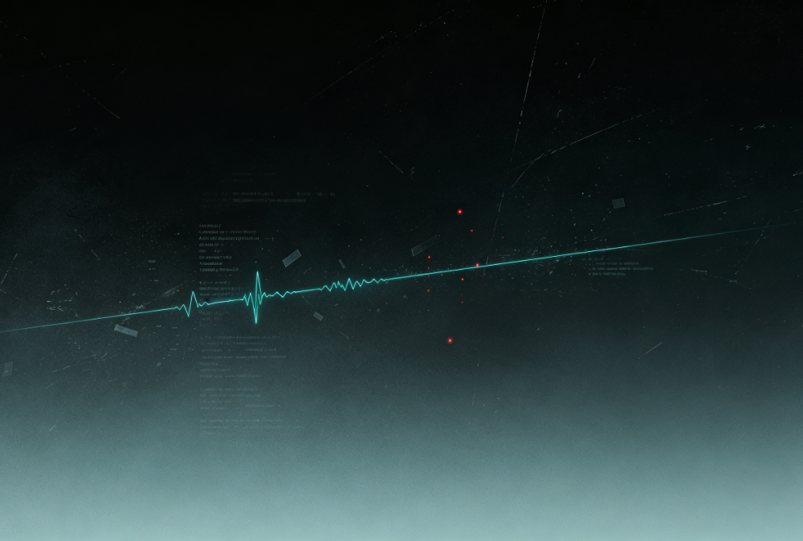
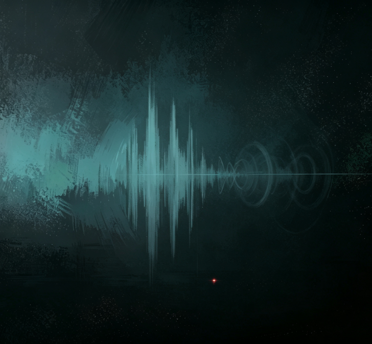
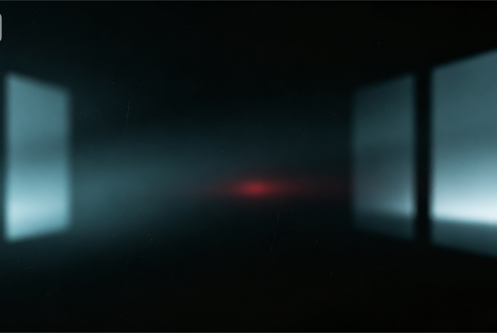
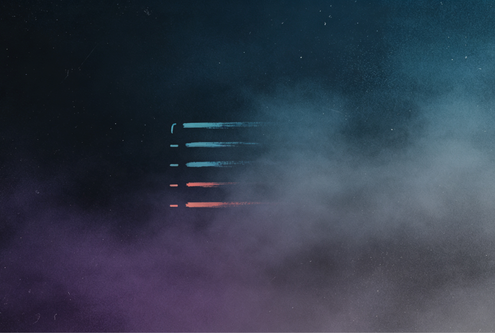
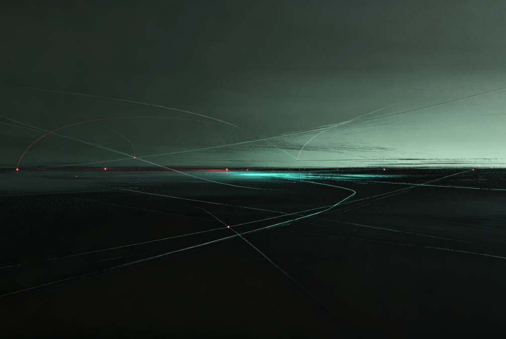

按下新的唤出快捷键
等待输入…
可直接使用空格；其他按键建议搭配 ⌘ / ⌥ / ⌃ / ⇧

汽水音乐

:
Timer

Cursor 用量
Auto--%
Other--%
Grok Bot--%
读取本机 Cursor 登录态…

快速录音

当前窗口
展开后读取当前窗口…


常用指令
迁移中，稍候
0
0
0
0
✎
还没有保存的笔记
点击左上角「新建」即可开始记录。
完成一次录音后，音频和转写文本会保存在这里。
复制点什么，历史会出现在这里
新增密钥仅保存在本机
安全存储密码不会发送到页面存储，复制后 60 秒自动清空剪贴板。
账号密码0 项
智能能力API 配置
通义百炼实时转写未配置
DeepSeek 智能命名未配置
密钥由系统安全存储加密，仅在你主动查看或复制时解密。
Cursor用量 Token
未配置 · 使用本机登录
可选。填写后优先用手动 Token 拉用量；失效时自动回退本机 Cursor 登录态，并在首页提示。
NAS 同步连接与状态
未绑定
通道 —
待传 0
上次同步 —
不安全连接：已启用明文 HTTP endpoint，设备令牌与待办可能被窃听或篡改
统一网关 Bearer 不可用时，可添加「设备同步端口」endpoint（与网关可并存）。端口不写死，请填写 FPK 展示的完整 URL。
Endpoint多地址选路
同 serverId + uid；证书错误不转移
配对设备配对
在飞牛 NAS 的 Pome Panel Sync 网页生成配对码后，填写下方绑定本机。设备令牌由系统安全存储加密，不进入 LocalStorage。
设备已配对列表
确认
工作区显示功能
首页与设置始终显示
首页首页组件
隐藏后自动填充 · 至少保留一个

首页镜子
封面图片
支持 PNG、JPG、WebP 与 HEIC，替换后首页立即同步。
这台电脑本机与唤出
唤出快捷键Space
面板位置收起时可拖动；点一下展开
数据文件夹 · 默认文件夹读取中…
一二三四五六日
截止时间:
API 配置
实时转写与智能命名 · 密钥仅加密保存在本机
未配置
智能命名与分组OpenAI-compatible
未配置
API Key 会由系统安全存储加密，渲染页面无法读取。